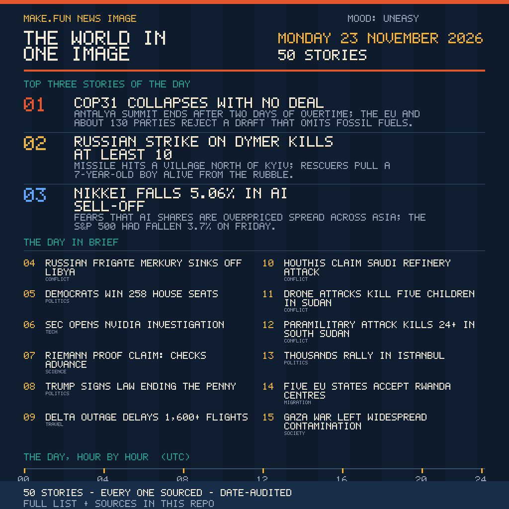

MONDAY 23 NOVEMBER 2026 · WORLD MOOD: UNEASY
The World in One Image
Fifty stories from Monday 23 November 2026, drawn as one poster: the COP31 climate summit collapses in Antalya, a Russian strike kills at least ten in Dymer, and an AI sell-off knocks Japan's Nikkei down 5.06%. Every story below is sourced, and every story's date is audited: 38 happened on 23 November, 10 happened on 22 November and were first reported on the 23rd, and 2 are follow-ups to earlier events, labelled with their real dates.

main.py
(pure Python standard library) from stories.json. Re-running it
produces byte-identical output.Date audit
38 stories happened on Monday 23 November 2026.
10 stories happened on Sunday 22 November and were first reported on
23 November — COP31's collapse, the Dymer strike, the sinking of the Merkury,
the Delta outage, the Shenzhen summit, the Banten factory fire, and the
MotoGP, ATP Finals, Copa Sudamericana and Mexico City NFL results.
2 stories are follow-ups to earlier events: the SEC's Nvidia probe
follows Jensen Huang's resignation on 12 November, and the Riemann Hypothesis
proof claim was posted on 20 November, with verification updates on 22–23
November. No story is presented as happening on a day other than its real date.
UTC timeline
| 00 UTC | 04 UTC | 08 UTC | 12 UTC | 16 UTC | 20 UTC | 24 UTC |
|---|---|---|---|---|---|---|
| COP31 ends | Asia markets open | Nikkei −5.06% | Europe reacts | US wakes | SEC probes Nvidia | Day closes |
All fifty stories
| # | Story | Category | Date | Source |
|---|---|---|---|---|
| 1 | COP31 collapses with no deal — Antalya summit ends after two days of overtime; the EU and about 130 parties reject a draft that omits fossil fuels. | CLIMATE | rep 23 Nov | One Turn |
| 2 | Russian strike on Dymer kills at least 10 — Missile hits a village north of Kyiv; rescuers pull a 7-year-old boy alive from the rubble. | CONFLICT | rep 23 Nov | One Turn |
| 3 | Nikkei falls 5.06% in AI sell-off — Fears that AI shares are overpriced spread across Asia; the S&P 500 had fallen 3.7% on Friday. | MARKETS | 23 Nov | One Turn |
| 4 | Russian frigate Merkury sinks off Libya — Warship sinks at Benghazi after a suspected Ukrainian naval drone attack; Zelenskyy says the MV Angara was also hit. | CONFLICT | rep 23 Nov | Inshorts |
| 5 | Democrats win 258 House seats — Their largest US House majority in more than three decades. | POLITICS | rep 23 Nov | Inshorts |
| 6 | SEC opens Nvidia investigation — Probe follows founder-CEO Jensen Huang's resignation (12 Nov) amid a spy scandal; CFO Colette Kress is interim CEO. | TECH | fallout, 12 Nov | TechRadar News |
| 7 | Riemann proof claim: checks advance — Lean verification clears all 175,187 modules of Alpöge's claimed proof; Meta's Alexandr Wang weighs in. Claim is unverified. | SCIENCE | fallout, 20 Nov | ExplainX |
| 8 | Trump signs law ending the penny — The Common Cents Act closes the penny's 232-year run. | POLITICS | 23 Nov | GEORGE |
| 9 | Delta outage delays 1,600+ flights — A weight-and-balance systems outage hits Atlanta as Thanksgiving travel begins. | TRAVEL | rep 23 Nov | GEORGE |
| 10 | Houthis claim Saudi refinery attack — Houthis say they hit a Saudi refinery; a Saudi-led strike hits Hodeida in Yemen. | CONFLICT | 23 Nov | One Turn |
| 11 | Drone attacks kill five children in Sudan — Children killed in strikes on Khartoum and Omdurman. | CONFLICT | 23 Nov | One Turn |
| 12 | Paramilitary attack kills 24+ in South Sudan — At least 24 civilians killed in a paramilitary attack. | CONFLICT | 23 Nov | One Turn |
| 13 | Thousands rally in Istanbul — Protesters march against a media takeover in Turkey. | POLITICS | 23 Nov | One Turn |
| 14 | Five EU states accept Rwanda centres — Five EU countries agree to deportation centres in Rwanda. | MIGRATION | 23 Nov | One Turn |
| 15 | Gaza war left widespread contamination — Experts warn the war left Gaza a toxic wasteland. | SOCIETY | 23 Nov | One Turn |
| 16 | US Army to detonate explosives in Iowa — The Army will detonate an unstable lead-azide stockpile in Middletown despite a court order to pause. | SOCIETY | 23 Nov | One Turn |
| 17 | Nine shot at California concert — Nine people shot at a concert in Strathmore, central California. | JUSTICE | 23 Nov | One Turn |
| 18 | ICE video sparks Seattle protests — Video of ICE detaining a father and daughter draws protests in Seattle. | MIGRATION | 23 Nov | One Turn |
| 19 | Bolsonaro in intensive care — Brazil's former president is in intensive care with an intestinal obstruction. | POLITICS | 23 Nov | One Turn |
| 20 | South Korea minister resigns — The education minister quits over an exam cheating scandal. | POLITICS | 23 Nov | One Turn |
| 21 | Colombia asks X to suspend Petro — Colombia asks X to suspend former president Petro's account. | POLITICS | 23 Nov | One Turn |
| 22 | Denmark accuses Russia of murder plot — Denmark says Russia plotted to kill a Ukrainian-American rapper. | POLITICS | 23 Nov | GEORGE |
| 23 | Iran claims US drone shot down — Iran says it shot down a US MQ-9A Reaper over the Strait of Hormuz. | CONFLICT | 23 Nov | Inshorts |
| 24 | Tankers ablaze near Hormuz — Iran war: tankers burn near the Strait of Hormuz and strikes hit Bahrain. | CONFLICT | 23 Nov | One Turn |
| 25 | Eisenkot condemns settler arson — Eisenkot denounces settler arson in the West Bank; his coalition talks with Netanyahu end without a deal. | POLITICS | 23 Nov | One Turn |
| 26 | Trump calls Putin 'my friend' — After the Shenzhen summit, the US, China and Russia issue a 'Declaration toward Peace'. | POLITICS | rep 23 Nov | One Turn |
| 27 | France hopefuls question Ukraine aid — France's leading presidential candidates both question aid to Ukraine ahead of next spring's election. | POLITICS | 23 Nov | SimpleLife |
| 28 | South Korea exports top $1 trillion — Annual exports pass $1 trillion for the first time, driven by AI chip demand. | ECONOMY | 23 Nov | SimpleLife |
| 29 | Taiwan stocks swing 1,578 points — The index falls nearly 591 points early, then buyers push it back; TSMC ends up over 2%. | MARKETS | 23 Nov | SimpleLife |
| 30 | Belgian airports shut in strike — A national anti-austerity strike grounds flights as air traffic control is suspended. | ECONOMY | 23 Nov | One Turn |
| 31 | Tata Steel buys $1.67bn stake — Tata Steel to buy a $1.67 billion stake in India's top steel pipe maker. | ECONOMY | 23 Nov | One Turn |
| 32 | US energy exports hit records — US energy exports reach records as the oil market watches a surplus. | ENERGY | 23 Nov | One Turn |
| 33 | Indonesia seizes chemical ship — A ship sailing from China to Bangladesh is seized carrying 405 tonnes of sodium perchlorate, a rocket-propellant chemical. | ASIA | 23 Nov | Inshorts |
| 34 | Nepal PM welcomed in Delhi — PM Balen Shah receives a ceremonial welcome at Rashtrapati Bhavan and is received by PM Modi. | ASIA | 23 Nov | Inshorts |
| 35 | India stays third in Asia Power Index — India retains third place in the Lowy Institute's Asia Power Index, scoring 40.5. | ASIA | 23 Nov | Inshorts |
| 36 | Hackers use AI framework Cairn — Suspected Chinese hackers use the AI framework Cairn to attack East Asian universities. | TECH | 23 Nov | SimpleLife |
| 37 | Candy factory fire in Indonesia — Fire in Serang, Banten: 3 killed and dozens missing. | DISASTER | rep 23 Nov | One Turn |
| 38 | Ebola response disrupted in Congo — Fighting near the Ebola area in eastern DR Congo disrupts the response. | HEALTH | 23 Nov | One Turn |
| 39 | Drug may cure hormone-driven hypertension — An FDA-approved drug may cure hormone-driven high blood pressure. | HEALTH | 23 Nov | One Turn |
| 40 | Pugh swims Strait of Hormuz — Lewis Pugh swims the length of the Strait of Hormuz. | CLIMATE | 23 Nov | One Turn |
| 41 | Nigeria ends jail for suicide attempts — Nigeria moves to end prison sentences for attempted suicide. | HEALTH | 23 Nov | One Turn |
| 42 | Volcanoes found in Mariana Trench — A robot submarine finds unprecedented volcanic activity in the Mariana Trench. | SCIENCE | 23 Nov | One Turn |
| 43 | Princess of Wales cancer film — The Princess of Wales shares her cancer journey in a documentary. | HEALTH | 23 Nov | One Turn |
| 44 | DNA of 194-year-old tortoise — A study looks at the DNA of a 194-year-old tortoise on Saint Helena. | SCIENCE | 23 Nov | One Turn |
| 45 | Milky Way simulation sets record — A Milky Way simulation reaches record resolution. | SCIENCE | 23 Nov | One Turn |
| 46 | Nepal first Loss and Damage payout — Nepal is set to receive the first payout from the UN Loss and Damage Fund. | CLIMATE | 23 Nov | One Turn |
| 47 | Marquez wins eighth MotoGP title — Marc Marquez takes his eighth world title, equalling Giacomo Agostini. | SPORT | rep 23 Nov | One Turn |
| 48 | Alcaraz wins first ATP Finals — Carlos Alcaraz wins his first ATP Finals title in Turin. | SPORT | rep 23 Nov | One Turn |
| 49 | Boca Juniors win Sudamericana — Boca Juniors win the Copa Sudamericana in Barranquilla. | SPORT | rep 23 Nov | One Turn |
| 50 | 49ers rout Vikings 35-10 in Mexico — San Francisco overwhelms Minnesota at Azteca Stadium as the NFL returns to Mexico City. | SPORT | rep 23 Nov | Reuters |